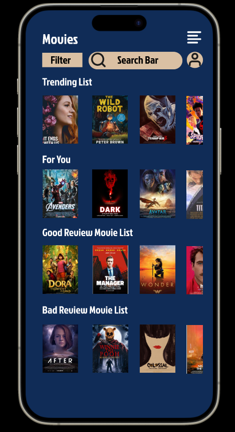
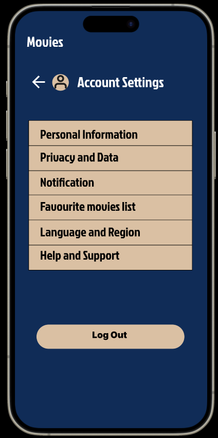
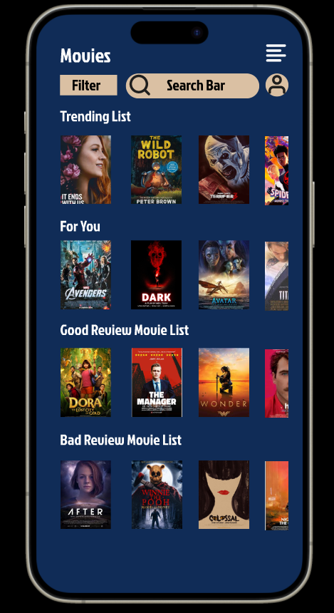
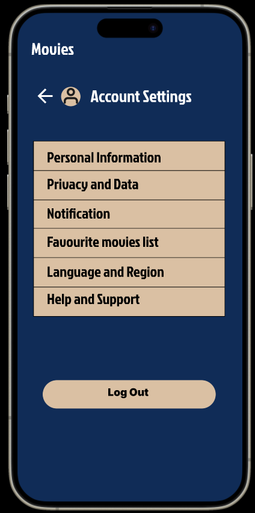

Fitness Mobile Application
I made this app using Kotlin and Firestore database. This app helps users maintain a healthy lifestyle by tracking key fitness metrics. Features include:
User Authentication: Secure login and registration.
BMI Calculator: Calculates BMI and provides health status feedback.
Step Tracking: Monitors daily and weekly steps with visual charts.
Sleep Tracking: Logs sleep hours and sets alarms.
Water Intake: Tracks daily water intake.
Workout Plans: Provides workout plans for user.


Movie Mobile Design
A mobile app designed for movie lovers to discover, review, and share films effortlessly. I developed a user-centered prototype using figma with features like personalized recommendations, easy-to-read reviews, and a streamlined review submission process. This project demonstrates my skills in user-focused design and creating functional, visually appealing mobile interfaces.
 



Swipework App
Swipework is a mobile job-searching app that allows users to easily swipe through job listings based on their preferences. The app features company profiles, personalized job recommendations, and a user-friendly interface for seamless navigation.
Technologies Used:
Flutter: For cross-platform mobile development, ensuring a smooth experience on both iOS and Android. Firebase: Used for user authentication and real-time data storage. Bloc Architecture: For state management, providing a clean and scalable solution for handling app states. YouTube Player API: Integrated for displaying company videos and job-related content. Custom UI/UX: Designed with a swipeable interface and modern, attractive design to enhance user engagement.
Weather Station (IoT)
This project is an IoT-based weather monitoring system using an ESP32 microcontroller and a DHT11 sensor to collect temperature and humidity data. The data is sent to an MQTT broker, stored in InfluxDB, and visualized in Grafana. The backend is developed with Node.js, and the API is implemented in Golang. The entire system is containerized using Docker for easy deployment.
Python Data processing using Blender
This project involves creating a Blender Python script to visualize geographic height data from the National Land Survey of Finland. Using ESRI grid files, the script reads height data to generate detailed 3D terrain models within Blender. This project showcases skills in Blender scripting, handling geographic data, and creating efficient 3D visualizations.


Task Activity Manager Website
This is a full-stack web application designed for efficient task and activity management, built with React for the frontend, Node.js for the backend, and MongoDB as the database. The app allows users to create, edit, and delete tasks and activities, with progress tracking features for completed tasks.